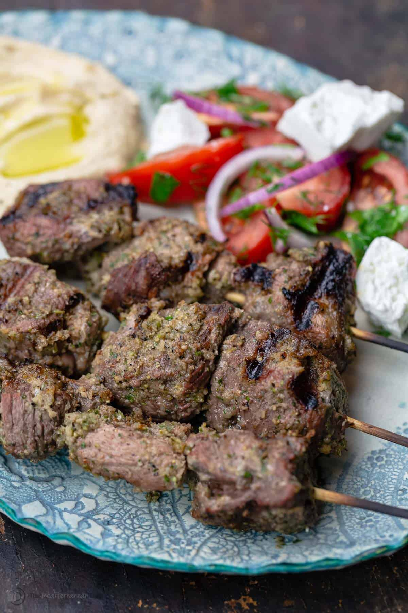

Moroccan Sirloin Kebabs

Ingredients
Serves 3 to 4
- 500 grams of sirloin steak cut into 2 inch cubes
- 3 tablespoons finely chopped parsley
- 3 tablespoons very finely chopped cilantro
- 3 tablespoons finely chopped parsley
- 2 red onions finely chopped
- 1 small nub grated ginger
- 1/2 freshly squeezed lemon (about 2 tablespoons)
- Salt and pepper to taste
Steps
- In a large bowl mix the meat with the rest of the ingredients.
- Using your hands, incorperate the seasonings throughout the meat so it absorbs the flavor.
- Let rest in the fridge for a minimum of 2 hours or overnight.
- When ready to serve, thread the meat through the skewers and grill to your liking.